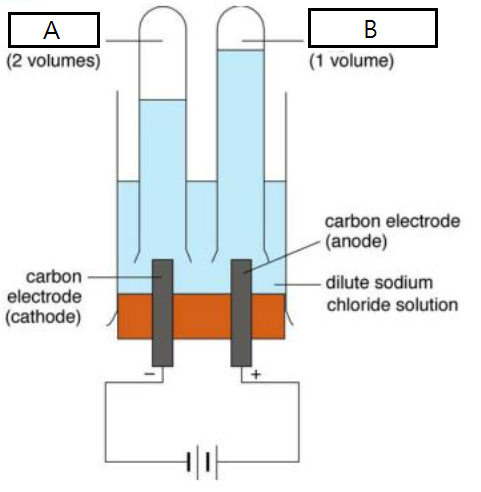

2021-07-24 (Answer)
Question 1
- A and B are gases that evolve from the electrolytic cell.
- Write down the name of A and B.
- Suggest a chemical test for A and B respectively.
A: Hydrogen gas, B: Oxygen gas
A: burning splint, positive result: pop sound, B: glowing splint, positive result: relights
- Write down the ionic half equations for the cathode and anode.
- The experiment is allowed to continue for a long period of time. Peter says that some new compounds other than A and B may be formed. Do you agree?
- Explain how electrolysis can distinguish dilute sodium chloride solution and dilute sodium iodide solution.
Cathode: 2H+ + 2e- → H2
Yes, chlorine gas is evolved.
In long run, NaCl(aq): yellowish-green gas is evolved (Cl2 (aq)) , NaI(aq): black solid (I2 (s)) / brown solution (I2 (aq))
Question 2
Comment whether each of the following is true.
- Pure acids do not conduct electricity.
- If a compound is an electrolyte, it must conduct an electric current.
- Weak acids are weak because they are only sparingly soluble in water.
- Sodium chloride can dissolve in methanamide.
- To calculate the standard enthalpy of formation of sodium chloride, we can conduct an experiment to mix elemental sodium and chlorine together.
T, no mobile ions
F, an electrolyte is a compound that conducts electricity when it is in an aqueous solution or molten
F, weak acids are weak because they partially ionize / dissociate into ions.
Solubility ≠ ease of dissociation!
Solubility ≠ ease of dissociation!
Solubility ≠ ease of dissociation!
T, methanamide is polar.
For your reference:
Solubility in water: 360g NaCl / kg
Solubility in methanamide: 94g NaCl / kg
Solubility in glycerol: 83g NaCl / kg
Solubility in pentan-1-ol: 0.018g NaCl / kg
F, too dangerous / not accurate.
Question 3
Comment whether each of the following is a redox reaction.
Redox = oxidation number changes! Please check How to calculate oxidation number
- Fractional distillation.
- Photosynthesis.
- Reaction between butane and chlorine water.
- Reaction between propene and hydrogen gas.
- Reaction between concentrated sulphuric acid and sodium hydroxide.
F, physical change.
T.
F, no reaction. Only reaction with chlorine gas and UV.
T.
F, any neutralization is not redox.
Question 4
Write down the following.
- Functions of salt bridges.
- Functions of porous pot.
- Definition of electroplating.